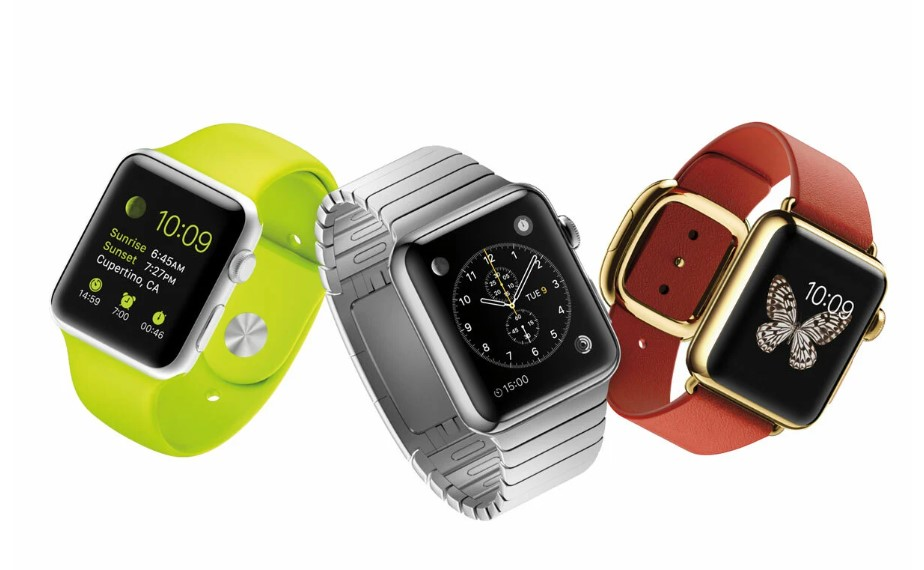

The Apple iWatch is dead – long live the Apple Watch! Apple’s “one more thing” at its special launch event turned out to be its first piece of wearable technology – and it’s quite the stunner.
So without further ado, here are the main things you need to know about the Apple Watch.
They are 3 watches Not just one

Pay attention, folks. There’s the Apple Watch (made of stainless steel); the Apple Watch Sport (made of aluminium); and the Apple Watch Edition (made of 18-carat gold, no less). And there are two different sizes for each, as well as a huge selection of different, easy-to-connect straps.